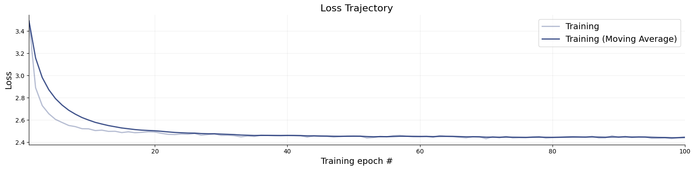
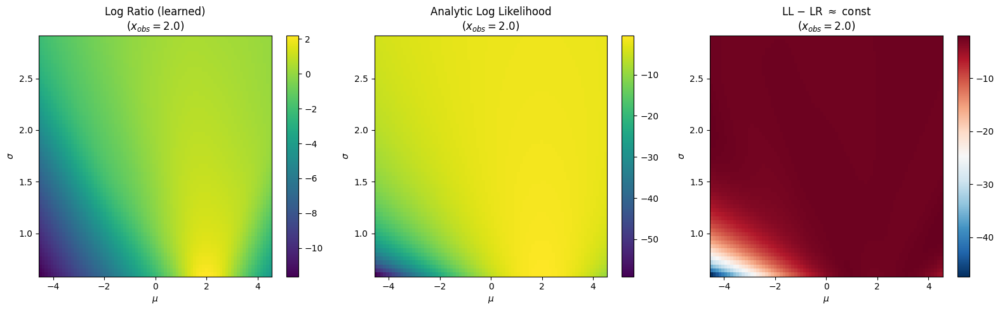
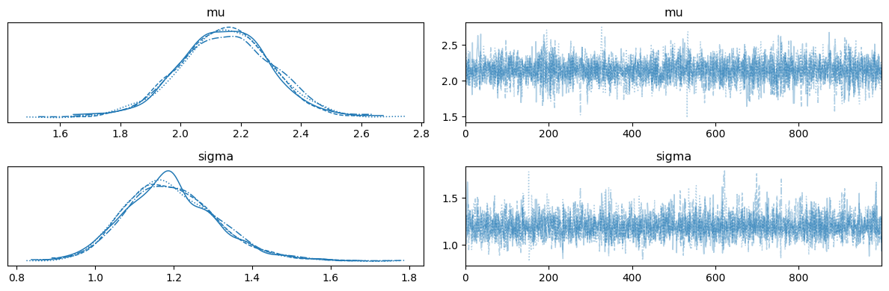
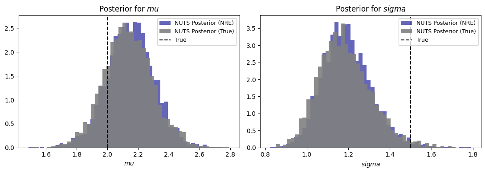
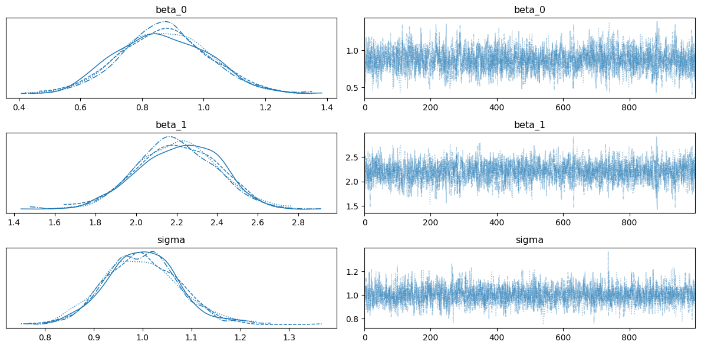
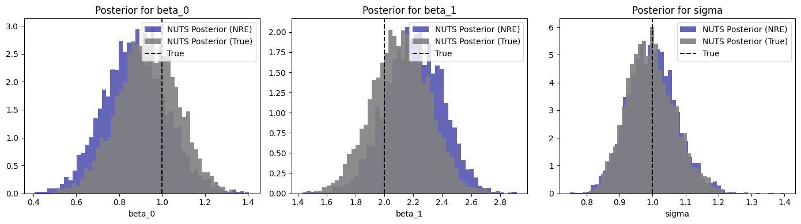
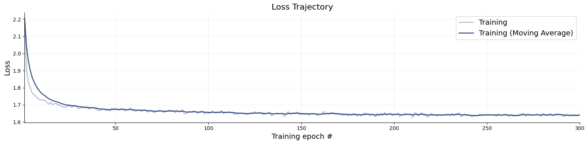
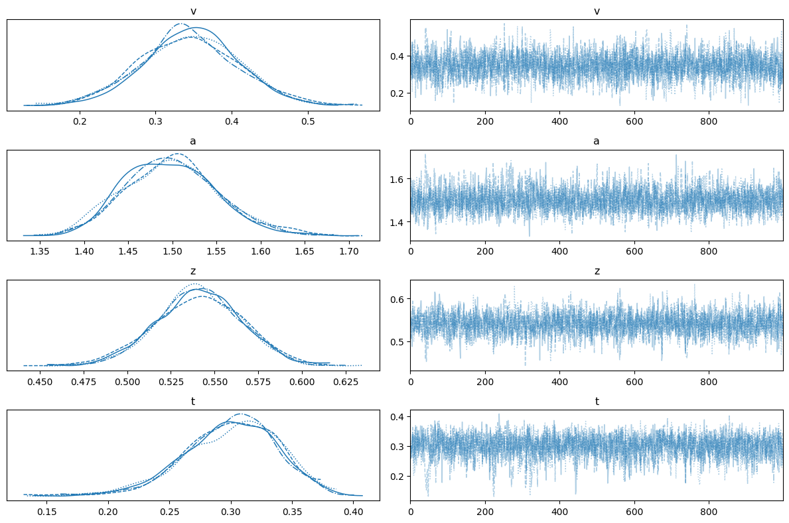
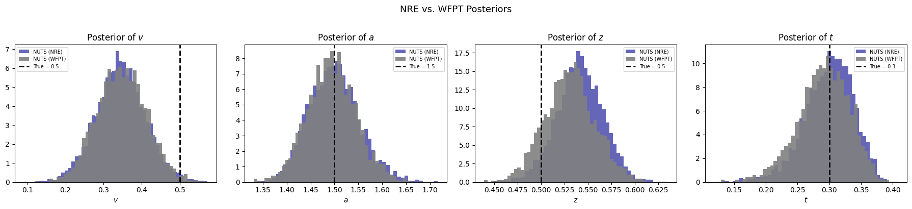

12. Neural Ratio Estimation with BayesFlow and PyMC#
This notebook demonstrates Neural Ratio Estimation (NRE) — a simulation-based inference method that replaces the intractable likelihood with a learned log-density ratio.
12.1. The Core Idea#
Our implementation follows closely the paper Contrastive Neural Ratio Estimation for Simulation-Based Inference. The ratio estimator learns a single-observation log-ratio
Because observations are i.i.d. given \(\theta\), the joint posterior factorizes:
This means we can:
Train on individual simulated observations (cheap, parallelizeable)
Aggregate at inference by summing \(n\) log-ratios — no retraining needed
Currently, integration with PyMC is only supported with the JAX backend.
12.2. Structure#
Part |
Topic |
|---|---|
1 |
Normal model — train, investigate, and run NUTS on a simple 2-parameter Gaussian |
2 |
Regression — per-trial mean via a linear predictor |
3 |
Drift-Diffusion Model (DDM) — realistic cognitive model with (RT, choice) data |
import os
os.environ["KERAS_BACKEND"] = "jax"
import bayesflow as bf
import keras
import numpy as np
import matplotlib.pyplot as plt
import jax
import jax.numpy as jnp
from scipy.stats import norm as sp_norm
import pymc as pm
import arviz as az
from bayesflow.wrappers.pymc import NeuralDistribution
INFO:jax._src.xla_bridge:Unable to initialize backend 'tpu': INTERNAL: Failed to open libtpu.so: libtpu.so: cannot open shared object file: No such file or directory
INFO:bayesflow:Using backend 'jax'
INFO:arviz:Found 'auto' as default backend, checking available backends
INFO:arviz:Matplotlib is available, defining as default backend
INFO:arviz.preview:arviz_base available, exposing its functions as part of arviz.preview
INFO:arviz.preview:arviz_stats available, exposing its functions as part of arviz.preview
INFO:arviz.preview:arviz_plots available, exposing its functions as part of arviz.preview
12.3. Part 1: Normal Model#
12.3.1. Generative Model#
We use a 2-parameter Gaussian with one observation per simulation:
The likelihood function produces exactly one draw \(x_i\) per call. At inference time the wrapper sums the per-trial log-ratios automatically.
def prior():
mu = np.random.uniform(-5, 5)
sigma = np.random.uniform(0.1, 5.0)
return {"mu": mu, "sigma": sigma}
def likelihood(mu, sigma):
return {"x": mu + sigma * np.random.standard_normal()}
simulator = bf.make_simulator([prior, likelihood])
# Sanity check: each simulation returns one x
batch = simulator.sample(4)
{k: v.shape for k, v in batch.items()}
{'mu': (4, 1), 'sigma': (4, 1), 'x': (4, 1)}
12.3.2. Build Adapter and Train#
inference_variables → the parameters \(\theta\); inference_conditions → the observation \(x\).
adapter = (
bf.Adapter()
.convert_dtype("float64", "float32")
.concatenate(["mu", "sigma"], into="inference_variables")
.rename("x", "inference_conditions")
)
ratio_approximator = bf.RatioApproximator(
adapter=adapter,
inference_network=bf.networks.MLP(),
K=64,
standardize=None,
)
learning_rate = keras.optimizers.schedules.CosineDecay(5e-4, decay_steps=5000)
optimizer = keras.optimizers.Adam(learning_rate=learning_rate)
ratio_approximator.compile(optimizer=optimizer)
Training on a fast simulator is cheap on both GPU and CPU, expect ~ 30 seconds.
history = ratio_approximator.fit(
simulator=simulator,
epochs=100,
num_batches=50,
batch_size=128,
verbose=2
)
f = bf.diagnostics.plots.loss(history)

12.4. The NeuralDistribution Wrapper#
NeuralDistribution is a thin bridge that turns a trained RatioApproximator or a ContinuousApproximator into a PyMC custom distribution usable with any gradient-based (NUTS, HMC) or gradient-free sampler (Slice).
Argument |
Role |
|---|---|
|
The trained estimator |
|
Names of the parameters (must match |
|
Assume i.i.d. observations → |
ratio_dist = NeuralDistribution(
approximator=ratio_approximator,
param_names=["mu", "sigma"],
exchangeable=True
)
12.4.1. Log-Ratio Landscape#
Fix \(x_{obs} = 2.0\) and sweep \((\mu, \sigma)\). The learned log-ratio should match the analytic log-likelihood up to a constant offset — the log model evidence \(\log p(x_{obs})\), which is independent of \(\theta\).
x_obs_val = 2.0
mu_grid = np.linspace(-4.5, 4.5, 80)
sigma_grid = np.linspace(0.6, 2.9, 60)
MU, SIGMA = np.meshgrid(mu_grid, sigma_grid)
mu_flat = jnp.array(MU.flatten())
sigma_flat = jnp.array(SIGMA.flatten())
x_flat = jnp.full_like(mu_flat, x_obs_val)
vmap_fn_all = jax.vmap(ratio_dist.backend.log_prob, in_axes=(0, 0, 0))
LR = np.asarray(vmap_fn_all(x_flat, mu_flat, sigma_flat)).reshape(MU.shape)
LL = sp_norm.logpdf(x_obs_val, loc=MU, scale=SIGMA)
fig, axes = plt.subplots(1, 3, figsize=(16, 5))
for ax, Z, title, cmap in zip(
axes,
[LR, LL, LL - LR],
["Log Ratio (learned)", "Analytic Log Likelihood", r"LL $-$ LR $\approx$ const"],
["viridis", "viridis", "RdBu_r"],
):
im = ax.pcolormesh(MU, SIGMA, Z, shading="auto", cmap=cmap)
ax.set_xlabel(r"$\mu$"); ax.set_ylabel(r"$\sigma$")
ax.set_title(f"{title}\n($x_{{obs}}={x_obs_val}$)")
plt.colorbar(im, ax=ax)
plt.tight_layout()

12.4.2. Scalar Parameter Inference with NUTS#
Simulate \(n = 50\) observations from the true model and recover \((\mu, \sigma)\). Both parameters are scalars shared across all trials.
SEED = 42
RNG = np.random.default_rng(SEED)
mu_true, sigma_true, n_obs = 2.0, 1.5, 50
x_observed = RNG.normal(mu_true, sigma_true, n_obs).astype(np.float32)
with pm.Model() as nre_model:
mu = pm.TruncatedNormal("mu", mu=0, sigma=5, lower=-5, upper=5)
sigma = pm.TruncatedNormal("sigma", mu=1.5, sigma=1.5, lower=0.5, upper=3.0)
obs = ratio_dist("obs", mu=mu, sigma=sigma, observed=x_observed)
trace_nre = pm.sample(
draws=1000,
tune=1000,
nuts_sampler="pymc",
chains=4,
cores=1, # need to use spawn context on Linux to avoid fork()
random_seed=SEED,
initvals={"mu": 0.0, "sigma": 1.5},
)
INFO:pymc.sampling.mcmc:Initializing NUTS using jitter+adapt_diag...
INFO:pymc.sampling.mcmc:Sequential sampling (4 chains in 1 job)
INFO:pymc.sampling.mcmc:NUTS: [mu, sigma]
INFO:pymc.sampling.mcmc:Sampling 4 chains for 1_000 tune and 1_000 draw iterations (4_000 + 4_000 draws total) took 16 seconds.
ax = az.plot_trace(trace_nre, var_names=["mu", "sigma"])
plt.tight_layout()

with pm.Model() as true_model:
mu = pm.TruncatedNormal("mu", mu=0, sigma=5, lower=-5, upper=5)
sigma = pm.TruncatedNormal("sigma", mu=1.5, sigma=1.5, lower=0.5, upper=3.0)
obs = pm.Normal("obs", mu=mu, sigma=sigma, observed=x_observed)
trace_true = pm.sample(
draws=1000,
tune=1000,
nuts_sampler="pymc",
chains=4,
cores=1, # need to use spawn context on Linux to avoid fork()
random_seed=42,
initvals={"mu": 0.0, "sigma": 1.5},
)
INFO:pymc.sampling.mcmc:Initializing NUTS using jitter+adapt_diag...
INFO:pymc.sampling.mcmc:Sequential sampling (4 chains in 1 job)
INFO:pymc.sampling.mcmc:NUTS: [mu, sigma]
INFO:pymc.sampling.mcmc:Sampling 4 chains for 1_000 tune and 1_000 draw iterations (4_000 + 4_000 draws total) took 1 seconds.
fig, axes = plt.subplots(1, 2, figsize=(11, 4))
for ax, name, true_val in zip(axes, ["mu", "sigma"], [mu_true, sigma_true]):
samples_nre = trace_nre.posterior[name].values.flatten()
samples_true = trace_true.posterior[name].values.flatten()
ax.hist(samples_nre, bins=50, density=True, alpha=0.6, label="NUTS Posterior (NRE)", color='darkblue')
ax.hist(samples_true, bins=50, density=True, alpha=0.9, label="NUTS Posterior (True)", color='gray')
ax.axvline(true_val, color="black", ls="--", label="True")
ax.set_xlabel(rf"${name}$"); ax.set_title(rf"Posterior for ${name}$")
ax.legend(fontsize=9)
fig.tight_layout()

12.5. Part 2: Regression - Per-Trial Parameters#
The same trained ratio estimator can be used for regressed parameters without any retraining. For example, when \(\mu_i = \beta_0 + \beta_1 \cdot c_i\) varies per trial, we can pass a per-trial vector mu_reg to ratio_dist. The wrapper vmaps over trials and each call uses the matching \(\mu_i\).
12.5.1. Data-Generating Process#
$$
beta_0_true, beta_1_true, sigma_reg_true = 1.0, 2.0, 1.0
n_obs_reg = 100
condition_data = RNG.choice([0, 1], size=n_obs_reg).astype(np.float32)
mu_per_trial = beta_0_true + beta_1_true * condition_data
x_reg_observed = RNG.normal(mu_per_trial, sigma_reg_true).astype(np.float32)
with pm.Model() as regression_model:
beta_0 = pm.TruncatedNormal("beta_0", mu=0, sigma=3, lower=-4, upper=4)
beta_1 = pm.TruncatedNormal("beta_1", mu=0, sigma=3, lower=-4, upper=4)
sigma = pm.TruncatedNormal("sigma", mu=1.5, sigma=1.5, lower=0.5, upper=3.0)
# Per-trial mu — no model changes needed, just pass the vector
mu_reg = beta_0 + beta_1 * condition_data
obs = ratio_dist("obs", mu=mu_reg, sigma=sigma, observed=x_reg_observed)
trace_reg = pm.sample(
draws=1000,
tune=1000,
nuts_sampler="pymc",
chains=4,
cores=1,
random_seed=SEED,
initvals={"beta_0": 0.0, "beta_1": 0.0, "sigma": 1.5},
)
INFO:pymc.sampling.mcmc:Initializing NUTS using jitter+adapt_diag...
INFO:pymc.sampling.mcmc:Sequential sampling (4 chains in 1 job)
INFO:pymc.sampling.mcmc:NUTS: [beta_0, beta_1, sigma]
INFO:pymc.sampling.mcmc:Sampling 4 chains for 1_000 tune and 1_000 draw iterations (4_000 + 4_000 draws total) took 24 seconds.
ax = az.plot_trace(trace_reg, var_names=["beta_0", "beta_1", "sigma"])
plt.tight_layout()

Now, let’s fit the same model with the true Gaussian likelihood.
with pm.Model() as regression_model_true:
beta_0 = pm.TruncatedNormal("beta_0", mu=0, sigma=3, lower=-4, upper=4)
beta_1 = pm.TruncatedNormal("beta_1", mu=0, sigma=3, lower=-4, upper=4)
sigma = pm.TruncatedNormal("sigma", mu=1.5, sigma=1.5, lower=0.5, upper=3.0)
mu_reg = beta_0 + beta_1 * condition_data
obs = pm.Normal("obs", mu=mu_reg, sigma=sigma, observed=x_reg_observed)
trace_reg_true = pm.sample(
draws=1000,
tune=1000,
nuts_sampler="pymc",
chains=4,
cores=1, # need to use spawn context on Linux to avoid fork()
random_seed=SEED,
initvals={"beta_0": 0.0, "beta_1": 0.0, "sigma": 1.5},
)
INFO:pymc.sampling.mcmc:Initializing NUTS using jitter+adapt_diag...
INFO:pymc.sampling.mcmc:Sequential sampling (4 chains in 1 job)
INFO:pymc.sampling.mcmc:NUTS: [beta_0, beta_1, sigma]
INFO:pymc.sampling.mcmc:Sampling 4 chains for 1_000 tune and 1_000 draw iterations (4_000 + 4_000 draws total) took 2 seconds.
fig, axes = plt.subplots(1, 3, figsize=(14, 4))
for ax, name, true_val in zip(
axes,
["beta_0", "beta_1", "sigma"],
[beta_0_true, beta_1_true, sigma_reg_true]
):
samples = trace_reg.posterior[name].values.flatten()
samples_true = trace_reg_true.posterior[name].values.flatten()
ax.hist(samples, bins=50, density=True, alpha=0.6, label="NUTS Posterior (NRE)", color="darkblue")
ax.hist(samples_true, bins=50, density=True, alpha=0.9, label="NUTS Posterior (True)", color="gray")
ax.axvline(true_val, color="black", ls="--", label=f"True")
ax.set_title(f"Posterior for {name}")
ax.set_xlabel(name)
ax.legend()
fig.tight_layout()

12.6. Part 3: Drift-Diffusion Model (DDM)#
12.6.1. The Model#
The Drift-Diffusion Model (Ratcliff, 1978) is the canonical model of two-alternative forced-choice (2AFC) decision-making. Evidence accumulates as a Wiener diffusion process with drift \(v\) until it hits one of two absorbing boundaries separated by \(a\). Each trial produces an observable pair:
Parameter |
Symbol |
Range |
Role |
|---|---|---|---|
Drift rate |
\(v\) |
\([-3, 3]\) |
Speed and direction of evidence accumulation |
Boundary separation |
\(a\) |
\([0.3, 2.5]\) |
Speed-accuracy trade-off |
Starting point |
\(z\) |
\([0.1, 0.9]\) |
Prior bias toward a boundary |
Non-decision time |
\(t\) |
\([0, 2]\) |
Sensory + motor latency |
The analytic Wiener first-passage time (WFPT) likelihood exists but can only be approximated numerically, allowing us to compare facotirzed NRE against a gold standard. For more complex model variants, the likelihood may not exist and NRE is among the only viable choices (along with amortized NPE).
12.6.2. Why NRE Works Here#
DDM trials are conditionally i.i.d. given \(\theta = (v, a, z, t)\):
We train on single trials and aggregate at inference — identical workflow to Parts 1 & 2, just with a 2-dimensional observation space \((RT, \text{choice})\) instead of a scalar \(x\).
The below workflow assumed that you have installed the following libraries:
Sequential Sampling Model Simulators (SSMS) - a library for fast simulation of diffusion-like models.
Hierarchical Sequential Sampling Models(HSSM) - a library for Bayesian (hierarchical) modeling with diffusion-like models.
from hssm.distribution_utils import make_distribution_for_supported_model
from ssms.basic_simulators.simulator import simulator as ssm_simulator
from ssms.config import model_config as ssms_model_config
ddm_cfg = ssms_model_config["ddm"]
param_names_ddm = ddm_cfg["params"]
param_lower = np.array(ddm_cfg["param_bounds"][0])
param_upper = np.array(ddm_cfg["param_bounds"][1])
print("DDM parameter bounds (from ssm-simulators config):")
for name, lo, hi in zip(param_names_ddm, param_lower, param_upper):
print(f" {name}: [{lo:.2f}, {hi:.2f}]")
DDM parameter bounds (from ssm-simulators config):
v: [-3.00, 3.00]
a: [0.30, 2.50]
z: [0.10, 0.90]
t: [0.00, 2.00]
12.6.3. Simulator: One Trial per Call#
The likelihood function returns exactly one \((RT, \text{choice})\) pair. This is the unit the ratio estimator learns on; the wrapper converts it into a bayesflow-friendly generator.
def ddm_prior():
return {
name: np.random.uniform(lo, hi)
for name, lo, hi in zip(param_names_ddm, param_lower, param_upper)
}
def ddm_likelihood(v, a, z, t):
"""Simulate ONE (RT, choice) trial — the NRE building block."""
result = ssm_simulator(
theta={"v": v, "a": a, "z": z, "t": t},
model="ddm",
n_samples=1,
delta_t=0.001,
)
obs = np.array([result["rts"][0, 0], result["choices"][0, 0]], dtype=np.float32)
return {"obs": obs}
ddm_simulator = bf.make_simulator([ddm_prior, ddm_likelihood])
# Sanity check: one batch of 3
batch = ddm_simulator.sample(3)
print("Keys:", list(batch.keys()))
print("obs shape:", batch["obs"].shape)
Keys: ['v', 'a', 'z', 't', 'obs']
obs shape: (3, 2)
12.6.4. Train the DDM Ratio Estimator#
Each observation is a 2-vector \((RT_i, \text{choice}_i)\), so the network input dimension grows by 2 compared to the normal model. Everything else is identical.
adapter_ddm = bf.RatioApproximator.build_adapter(
inference_variables=["v", "a", "z", "t"],
inference_conditions=["obs"]
)
ratio_approximator_ddm = bf.RatioApproximator(
adapter=adapter_ddm,
inference_network=bf.networks.MLP(widths=(256,)*3),
K=32,
standardize=None
)
learning_rate = keras.optimizers.schedules.CosineDecay(5e-4, decay_steps=45_000)
optimizer = keras.optimizers.Adam(learning_rate=learning_rate)
ratio_approximator_ddm.compile(optimizer=optimizer)
Training will take around 15 minutes on a GPU.
history_ddm = ratio_approximator_ddm.fit(
simulator=ddm_simulator,
epochs=300,
num_batches=150,
workers=4,
verbose=2,
batch_size=64
)
f = bf.diagnostics.plots.loss(history_ddm)

12.6.5. NUTS Sampling for the DDM#
We generate \(n = 200\) (RT, choice) trials from known ground-truth parameters and try to recover them with NUTS.
v_true, a_true, z_true, t_true = 0.5, 1.5, 0.5, 0.3
n_obs_ddm = 200
result = ssm_simulator(
theta={"v": v_true, "a": a_true, "z": z_true, "t": t_true},
model="ddm",
n_samples=n_obs_ddm,
random_state=SEED,
delta_t=0.001
)
x_observed_ddm = np.c_[result["rts"], result["choices"]].squeeze().astype(np.float32)
ratio_dist_ddm = NeuralDistribution(
approximator=ratio_approximator_ddm,
param_names=["v", "a", "z", "t"],
exchangeable=True
)
with pm.Model() as ddm_model:
v = pm.TruncatedNormal("v", mu=0, sigma=1.5, lower=-3.0, upper=3.0)
a = pm.TruncatedNormal("a", mu=1.0, sigma=0.5, lower=0.3, upper=2.5)
z = pm.TruncatedNormal("z", mu=0.5, sigma=0.2, lower=0.1, upper=0.9)
t = pm.TruncatedNormal("t", mu=0.3, sigma=0.3, lower=0.0, upper=2.0)
obs = ratio_dist_ddm("obs", v=v, a=a, z=z, t=t, observed=x_observed_ddm)
trace_ddm = pm.sample(
draws=1000,
tune=1000,
nuts_sampler="pymc",
chains=4,
cores=1, # use cores=4 in a "spawn context" (will fork on Linux and die)
random_seed=SEED,
initvals={"v": 0.0, "a": 1.0, "z": 0.5, "t": 0.3}
)
INFO:pymc.sampling.mcmc:Initializing NUTS using jitter+adapt_diag...
INFO:pymc.sampling.mcmc:Sequential sampling (4 chains in 1 job)
INFO:pymc.sampling.mcmc:NUTS: [v, a, z, t]
INFO:pymc.sampling.mcmc:Sampling 4 chains for 1_000 tune and 1_000 draw iterations (4_000 + 4_000 draws total) took 42 seconds.
az.plot_trace(trace_ddm, var_names=["v", "a", "z", "t"])
plt.tight_layout()

12.6.6. Comparison with the Analytic WFPT Likelihood#
HSSM provides the exact Wiener first-passage time density as a reference. We fit the same observed data with identical priors to see how closely the NRE posterior matches the gold standard.
AnalyticalDDM = make_distribution_for_supported_model(
"ddm", loglik_kind="analytical", backend="pytensor",
)
with pm.Model() as analytical_model:
v_a = pm.TruncatedNormal("v", mu=0, sigma=1.5, lower=-3.0, upper=3.0)
a_a = pm.TruncatedNormal("a", mu=1.0, sigma=0.5, lower=0.3, upper=2.5)
z_a = pm.TruncatedNormal("z", mu=0.5, sigma=0.2, lower=0.1, upper=0.9)
t_a = pm.TruncatedNormal("t", mu=0.3, sigma=0.3, lower=0.0, upper=2.0)
obs_a = AnalyticalDDM("obs", v=v_a, a=a_a, z=z_a, t=t_a, observed=x_observed_ddm)
trace_analytical = pm.sample(
draws=1000,
tune=1000,
nuts_sampler="pymc",
chains=4,
cores=1,
random_seed=SEED,
initvals={"v": 0.0, "a": 1.0, "z": 0.5, "t": 0.3},
)
INFO:pymc.sampling.mcmc:Initializing NUTS using jitter+adapt_diag...
INFO:pymc.sampling.mcmc:Sequential sampling (4 chains in 1 job)
INFO:pymc.sampling.mcmc:NUTS: [v, a, z, t]
INFO:pymc.sampling.mcmc:Sampling 4 chains for 1_000 tune and 1_000 draw iterations (4_000 + 4_000 draws total) took 13 seconds.
ERROR:pymc.stats.convergence:There were 2 divergences after tuning. Increase `target_accept` or reparameterize.
true_vals = {"v": v_true, "a": a_true, "z": z_true, "t": t_true}
fig, axes = plt.subplots(1, 4, figsize=(18, 4))
for ax, name in zip(axes, ["v", "a", "z", "t"]):
bf_samples = trace_ddm.posterior[name].values.flatten()
an_samples = trace_analytical.posterior[name].values.flatten()
ax.hist(bf_samples, bins=50, density=True, alpha=0.6, color="darkblue", label="NUTS (NRE)", edgecolor="none")
ax.hist(an_samples, bins=50, density=True, alpha=0.9, color="gray", label="NUTS (WFPT)", edgecolor="none")
ax.axvline(true_vals[name], color="black", ls="--", lw=2, label=f"True = {true_vals[name]}")
ax.set_xlabel(f"${name}$")
ax.set_title(f"Posterior of ${name}$")
ax.legend(fontsize=7)
fig.suptitle("NRE vs. WFPT Posteriors", fontsize=13, y=1.02)
fig.tight_layout()
